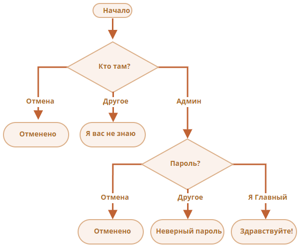

Логические операторы
Задачи
Что выведет код ниже?
- alert( null || 2 || undefined );
Решение:
alert( null || 2 || undefined ); // 2
Что выведет код ниже?
- alert( alert(1) || 2 || alert(3) );
Решение:
Сначала сработает alert(1), но так как alert возвращает undefined, что условно равно 0,
то в скобках будет верно значение 2, которое и выведется во внешнем alert.
1
2
Что выведет код ниже?
- alert( 1 && null && 2 );
Решение:
alert( 1 && null && 2 ); // null
Что выведет код ниже?
- alert( alert(1) && alert(2) );
Решение:
Сначала сработает alert(1), но так как alert возвращает undefined, что условно равно 0,
то в скобках будет верно значение undefined, которое и выведется во внешнем alert.
1
undefined
Что выведет код ниже?
- alert( null || 2 && 3 || 4 );
Решение:
alert( null || 2 && 3 || 4 ); // 3
Напишите условие if для проверки, что переменная age находится в диапазоне между 14 и 90 включительно.
«Включительно» означает, что значение переменной age может быть равно 14 или 90.
Решение:
if (age >= 14 && age <= 90) {}
Напишите условие if для проверки, что значение переменной age НЕ находится в диапазоне между 14 и 90 включительно.
Напишите два варианта: первый с использованием оператора НЕ !, второй – без этого оператора.
- alert( 1 && null && 2 );
Решение:
1. if (age < 14 || age > 90) {}
2. if (!(age >= 14 && age <= 90)) {}
Какие из перечисленных ниже alert выполнятся?
Какие конкретно значения будут результатами выражений в условиях if(...)?
- if (-1 || 0) alert( 'first' );
- if (-1 && 0) alert( 'second' );
- if (null || -1 && 1) alert( 'third' );
Решение:
if (-1 || 0) alert( 'first' ); // выполнится, (-1 || 0) === -1;
if (-1 && 0) alert( 'second' ); // не выполнится, (-1 && 0) === 0;
if (null || -1 && 1) alert( 'third' ); // выполнится, (null || -1 && 1) === 1
Напишите код, который будет спрашивать логин с помощью prompt.
Если посетитель вводит «Админ», то prompt запрашивает пароль, если ничего не введено или нажата клавиша Esc – показать «Отменено», в противном случае отобразить «Я вас не знаю».
Пароль проверять так:
- Если введён пароль «Я главный», то выводить «Здравствуйте!»,
- Иначе – «Неверный пароль»,
- При отмене – «Отменено».
Блок-схема:

Для решения используйте вложенные блоки if. Обращайте внимание на стиль и читаемость кода.
Подсказка: передача пустого ввода в приглашение prompt возвращает пустую строку ''. Нажатие клавиши Esc во время запроса возвращает null.
Решение:
const login = prompt('Введите логин:', '');
if (login === 'Админ') {
const password = prompt('Введите пароль:', '');
if (password === 'Я главный') {
alert('Здравствуйте');
} else if (!password) {
alert('Отменено');
} else {
alert('Неверный пароль');
}
} else if (!login) {
alert('Отменено');
} else {
alert('Я вас не знаю');
}